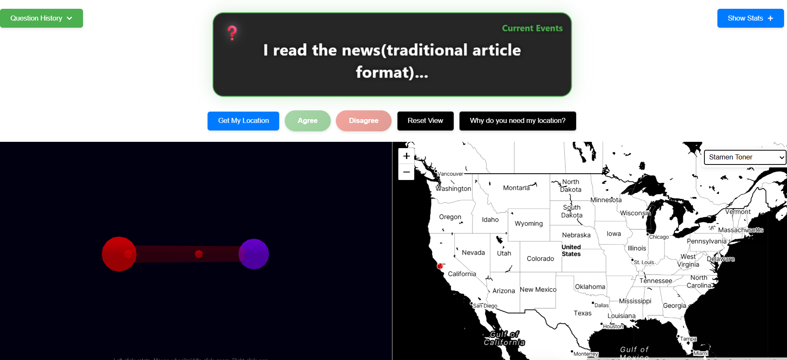
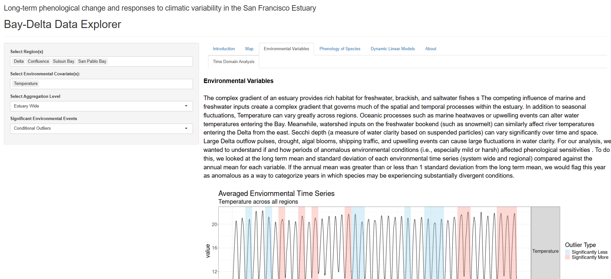
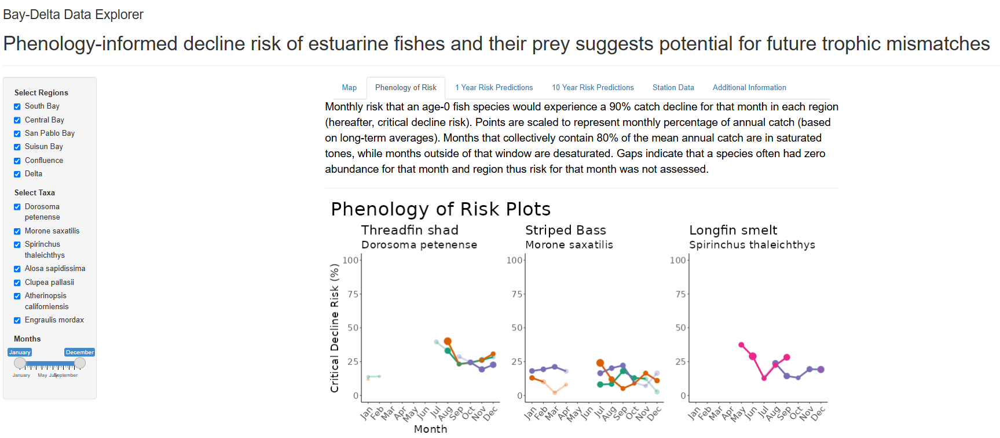
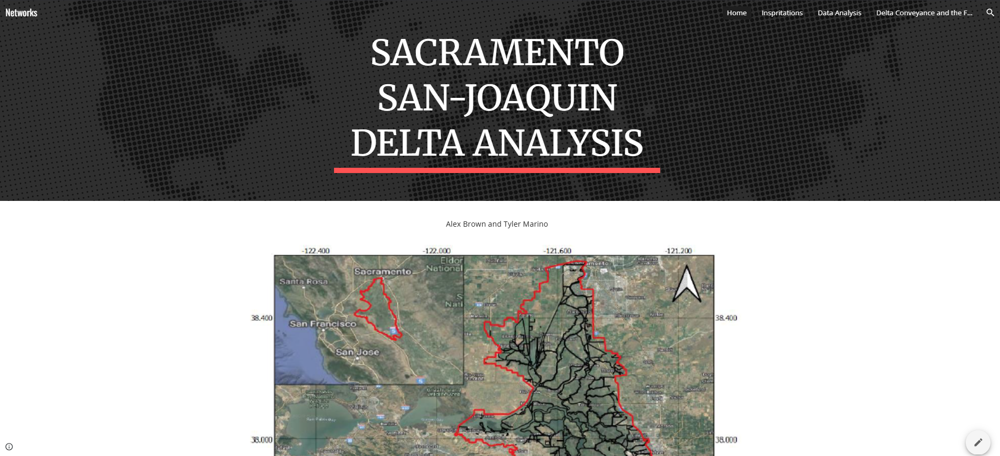
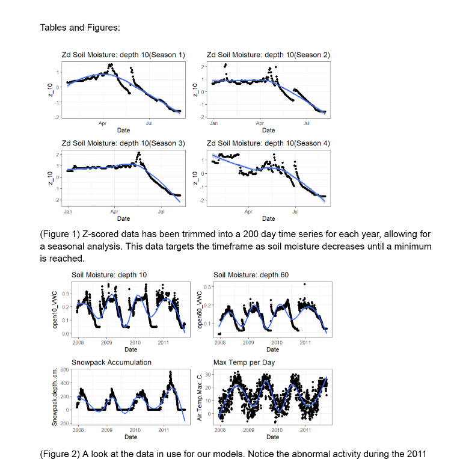

In my years in University and before, I have explored the worlds designed by engineers and computer wizards. I enjoyed the mathematical applications in the scientific and real world modeling realms as well as more interpersonal applications. I have gravitated to real world problems and utilizing my intuition with data to model and understand processes that elevate our world to one which we intermingle harmoniously with each other and the planet. A challenging problem to shift mindsets, but through my developments in consulting and research I have grown comfortable with looking at interpersonal and envirnmental system data. I hope to find a realm of industry and research where I can further these passions of mine and help spread the word motivating a better future.
Recipes De Remi
Relevance

Long-term phenological change and responses to climatic variability in the San Francisco Estuary

Phenology-informed decline risk of estuarine fishes and their prey suggests potential for future trophic mismatches

Bay Delta Network Anlysis
We first mapped each body of water as a node with geographic data, type of waterway and region within the delta system and used those that it runs into as their links. Then we conducted network anlysis populating a datatable with network statistics such as degree connectivity, degree centrality, and other NetworkX statistical properties one can pull. The relationships between geography and connectivity were interesting to me, so often analysis was conducted in the domain of geography. We futher did clustering analysis over multiple factor combinations from the statistics and other given information.
A main goal is to identify ensemble levee failures given there is a large water event such as heavy rain storms or large spring melts from a deep snowpack. You will find the website below which has more information as well as the link to my github folder for this project.
Github for Delta Network Analysis

Soil Moisture Analysis in the Sierra Nevadas
I located and wrangled relational data sets I found that yielded information on weather patterns and snow depth at several locations in the Sierra Nevada mountain range. Using various analysis methods, AB testing, descriptive statistic analysis, etc. I was able to refine my data to input it into a Mutlivariate Autoregressive Model using the R MARSS package. I had a timeframe of about 10 years including two El Nino years. El Nino is important to note as typically it is accompanied by warmer weather and more rain events. I thought that this was valuable to study as with the climate evolution, we are trending towards warmer weather which leads to less snow and more rain when we do have storms in the sierras. I was looking to analyze the covariate effects of snow pack, temperature and rainfall on soil moisture at several depths at a fixed location in the sierras. It was important to note that the data for soil moisture and snow, temperature and rain were collected at different locations, so a function would need to be applied to transform the data to the "same" domain. Below you will see a link to the presentation I gave, the journal entry I wrote as well as the github containing all my code and other important information and data.
Presentation from Research

Github(see zip folder for data and all other information)